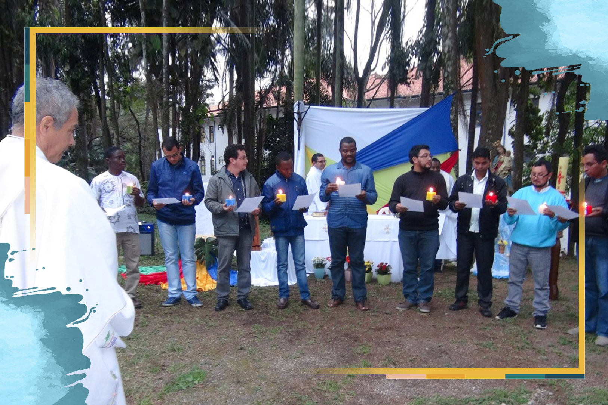

Orações Missionárias
A vida missionária dos seminaristas
18 de Outubro de 2020

Oração inicial
Espírito Santo, sopro de vida, que fazes novas todas as coisas, abre nossos corações às tuas inspirações para que, ao escutar e aprofundar tua Palavra, aumente em nós o ardor missionário e o cuidado com a Casa Comum, nossa terra, e o amor a todas as tuas criaturas, sobretudo cada pessoa criada à tua imagem e semelhança. Espírito de Sabedoria, guia nossos passos nos caminhos da missão. Amém..Reflexão
Até pouco tempo atrás, a maioria dos candidatos ao sacerdócio provinha do mundo rural. Hoje, a maioria é originária do mundo urbano. O que se pode constatar é que são filhos da época, com suas possibilidades, limitações, desafios e fragilidades.São jovens que abrem mão de projetos profissionais, deixam a casa dos pais e se dedicam, por oito anos de formação inicial, a tornarem-se padres. Hoje, no Brasil, temos quase 600 seminários e casas de formação, com aproximadamente 6 mil seminaristas das 277 dioceses no Brasil.
Um dos desafios no processo de formação nos seminários é o cultivo do espírito missionário. Não basta apenas fomentar e promover vocações ao presbiterado. É urgente despertar e fortalecer nos seminaristas a sensibilidade e zelo para o serviço missionário, de modo que “estejam prontos a dar a vida” (Papa Pio XI).
Palavra de Deus: Isaías 6,4-8
13 Jesus subiu a um monte e chamou a si aqueles que ele quis, os quais vieram para junto dele. 14 Escolheu doze, designando-os como apóstolos, para que estivessem com ele, os enviasse a pregar 15 e tivessem autoridade para expulsar demônios.Para meditar
A missão para os discípulos consistia em estar com Jesus, anunciar o que aprenderam e expulsar, com autoridade, tudo aquilo que ameaçasse a vida, prejudicasse as pessoas e causasse a morte. E para mim? Em que consiste a missão de Jesus em minha vida pessoal e familiar? De que maneira posso colocar em prática esse texto do Evangelho?
Oração do Mês Missionário
Deus Pai, Filho e Espírito Santo, fonte transbordante da missão, ajuda-nos a compreender que a vida é missão, dom e compromisso. Que Maria, nossa intercessora na cidade, no campo, na Amazônia e em toda parte, ajude cada um de nós a ser testemunhas proféticas do Evangelho, numa Igreja sinodal e em estado permanente de missão. Eis-me aqui, Senhor, envia-me! Amém.
Assista ao vídeo
Neste vídeo, vamos conhecer o testemunho do jovem seminarista José Lucas Alves da Cruz, que narra sobre sua experiência missionária em Guiné-Bissau, na África. Ele também conta como descobriu sua vocação e sua esperança de estar a serviço da Igreja como padre.Para rezar a novena completa com a sua família, comunidade ou grupos on-line, baixe o livrinho:
Novena Missionária 2020
Destaques
Província Stella Matutina
Rua São Benedito, 2146 - Santo Amaro - São Paulo - SP |
Tel. (11)
5547-7222


Província Spiritus Divinae Sapientiae
Rua Arnaldo Janssen, 320 - Cara-Cara - Ponta Grossa - PR
|
Tel. (42) 3326 4091